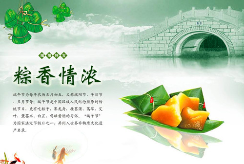

端午节简介：
端午节，为每年农历五月初五。据《荆楚岁时记》记载，因仲夏登高，顺阳在上，五月是仲夏，它的第一个午日正是登高顺阳好天气之日，故五月初五亦称为“端阳节”。此外端午节还称“午日节、五月节、龙舟节、浴兰节、诗人节”等。[1] 端午节是流行于中国以及汉字文化圈诸国的传统文化节日。

端午节，为每年农历五月初五。据《荆楚岁时记》记载，因仲夏登高，顺阳在上，五月是仲夏，它的第一个午日正是登高顺阳好天气之日，故五月初五亦称为“端阳节”。此外端午节还称“午日节、五月节、龙舟节、浴兰节、诗人节”等。[1] 端午节是流行于中国以及汉字文化圈诸国的传统文化节日。